Malta
History
Historical Periods
Historical Timeline
Localities
Beaches
Dog Friendly Beaches
Local Councils
Localities
Regions
Media
Movies
Movies Shot in Malta
Music Artists
Radio Stations
TV Shows
People
Auditors General
Chief Justices
Civil Commissioners
Counts
Deputy Prime Ministers
Governors
Governors-General
Grand Masters
Leaders of the Opposition
Members of the European Parliament
Members of Parliament
Police Commissioners
Presidents
Prime Ministers
Speakers of the House of Representatives
Politics
Governments
Political Parties
Religion
Auxiliary Bishops
Basilicas
Cathedrals
Catholic Bishops of Gozo
Catholic Bishops of Malta
Catholic Organizations
Catholic Parishes in Gozo
Catholic Parishes in Malta
Chapels
Churches
Parish Churches
Pastoral Centres
Sanctuaries
Sites
Megalithic Temples
Places of Interest
Sports
Athletics Clubs
Basketball Clubs
Boċċi Clubs
Boxers
Cricket Clubs
Cycling Clubs
Football Clubs
Hockey Clubs
Motorsport Clubs
Rock Climbing Clubs
Rugby Clubs
Snooker Players
Tennis Clubs
Volleyball Clubs
Water Polo Clubs
Others
AFM Aircraft
AFM Vessels
Catholic Church Schools
Military Ranks
Police Ranks
Search
Megalithic Temples
Related Categories
Places of Interest
Borġ in-Nadur
Borġ l-Imramma
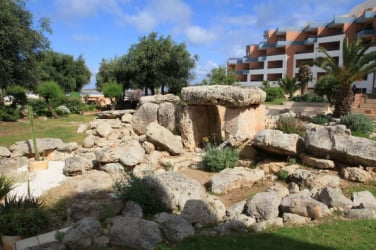
Buġibba Temple
Debdieba
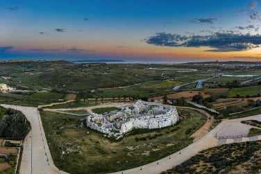
Ġgantija
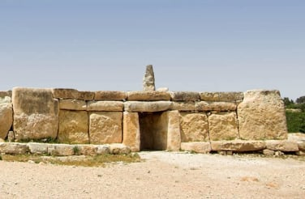
Ħaġar Qim
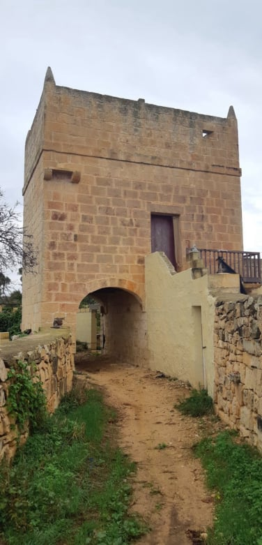
Ħal-Ġinwi Temple
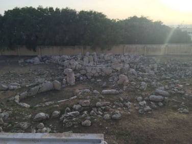
Kordin Temples
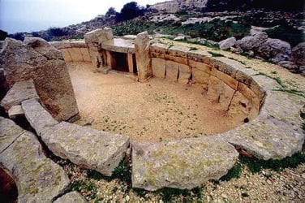
Mnajdra
Qortin l-Imdawwar
Santa Verna
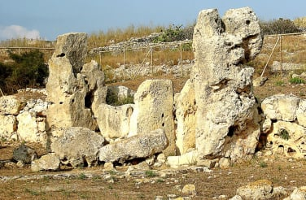
Skorba Temples
Ta' Ħaġrat Temples
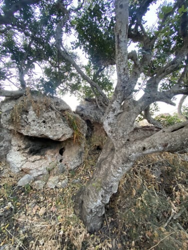
Ta' Marżiena
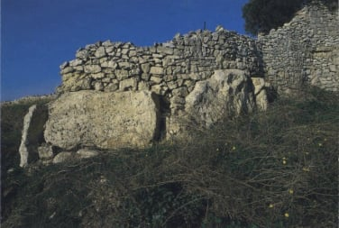
Ta' Raddiena
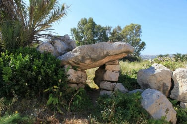
Tal-Qadi Temple
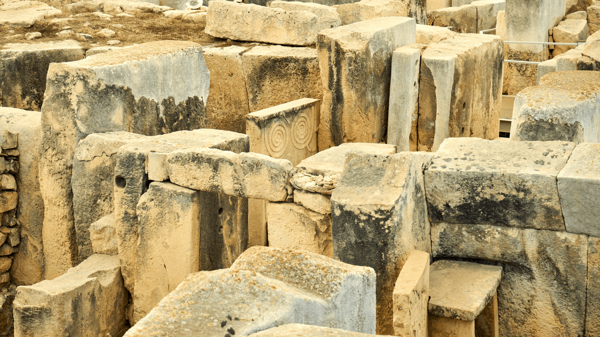
Tarxien Temples
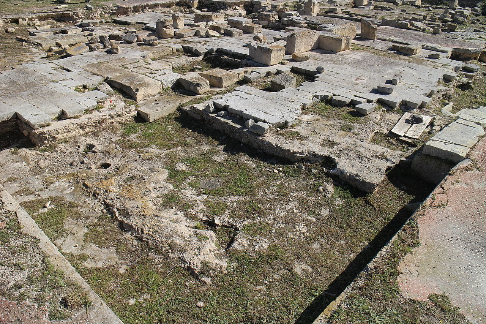
Tas-Silġ
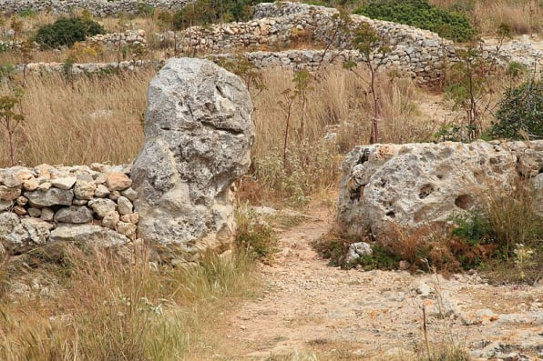
Xemxija Temples
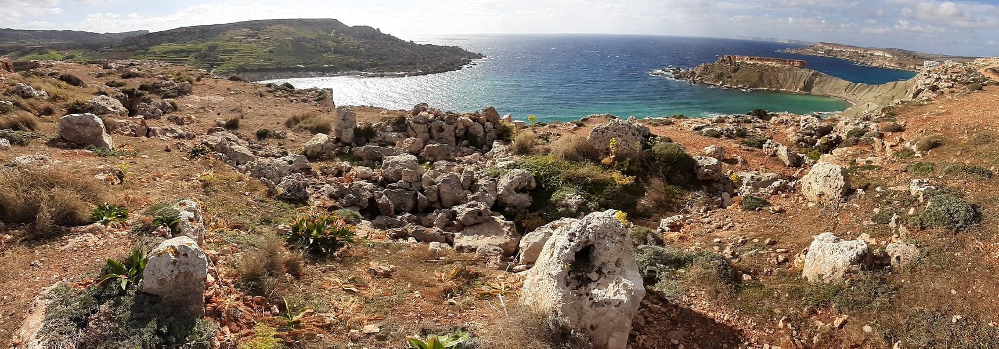
Xrobb l-Għaġin Temple
Help
Contact Us
Other Websites
FIFA World Cup
Movies
TwidGrid
About
Discover Malta, Gozo and its other islands, its history, people and culture.
© Copyright 2024 TwidGrid - All Rights Reserved